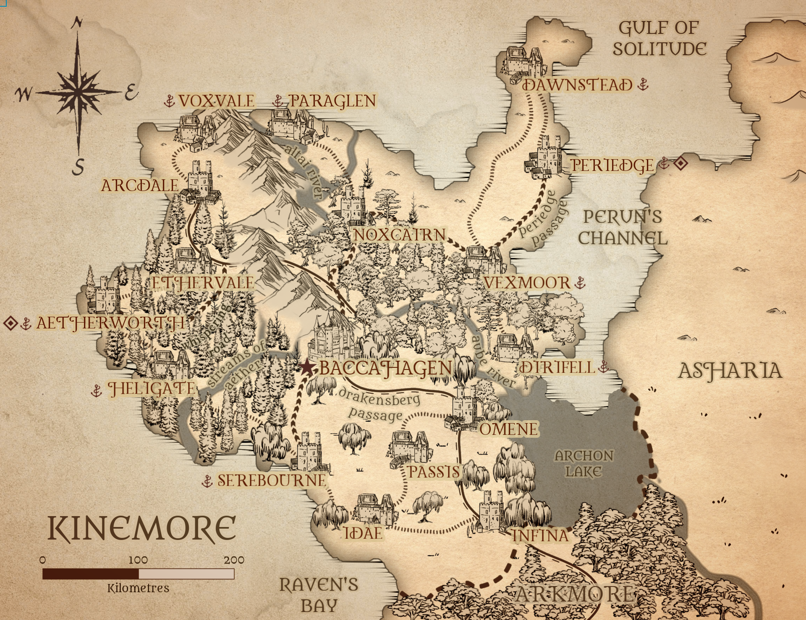

"The Northern Empire"
Kinemore is a cold, wooded nation in the north-west of Astren. It is home to many delegates and important figures of the Astran Empire.

GEOGRAPHY
Kinemore is home to two large forests, the Whispering Wood and the Sunwood, as well as an arctic tundra in the far north. The Whispering Wood is known to be a haunted and cursed place, feared by those non-native to it, while the Sunwood is a holy and welcoming wood of much respect and admiration. The southern region of the nation is the home of a mystical swamp known as the Grey Glades. The natural magics at work there make it the perfect home for druids, naturalists and many rare and unusual species.

NOBILITY

DUBOIS
AETHERWORTH
House Dubois hold dominion over the Western regions of Kinemore, most notably the Whispering Wood. Headed by Lady Katherine Dubois.

FOXE
BACCAHAGEN
House Foxe are Kinemore's representatives to the Empire, and hold Kinemore's seat on the Imperial Council. Within the nation, they preside over the southeast. Headed by Lord Eadwulf Foxe.

DIETRICH
PERIEDGE
House Dietrich preside over the eastern and northernmost arctic regions of Kinemore. Headed by Lord Boreas Dietrich.